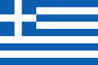

Grece

To know:
Capital : Athènes.
Population (2018) : ~10 millions of inhabitants.
Form of the State: Presidential
System with unitary: state
President of the Republic: Ekateríni Sakellaropoúlou
Vice-President of the Republic:Kyriákos Mitsotákis
Parliament: Grec Parliament
Official languages: Grec
Cash : Euro.
Geography
The country shares land borders with Albania, North Macedonia, Bulgaria and Turkey and maritime borders with Cyprus, Albania, Italy, Libya, Egypt and Turkey. The Adriatic Sea in Corfu, the Ionian Sea in the west, the Mediterranean Sea in the south and the Aegean Sea in the east, frame the country
Culture
Hellenic culture really took off from the eighth century BC with the foundation of Athens by the mythical Theseus, the invention of democracy, the construction of the Temple of Apollo at Delphi, the writing of the Iliad and the Odyssey by Homer as well as the beginning of the process of Greek colonization in the Mediterranean and the Black Sea. The ancient Greeks bequeathed Europe a colossal cultural baggage;
geography (Anaximander, Ptolemy, Strabo), scientific and mathematical (Euclid, Hypatia, < href="https://fr.wikipedia.org/wiki/Archim%C3%A8de">Archimedes), literary (Homer, Sappho, Erinna), linguistic (influence of Greek on French, English or Spanish), historical (Thucydides, Herodotus, Xenophon) and philosophical (Socrates, Plato, Aristotle)
Religion
Greek society is a society marked by the presence of Orthodox religious rites and traditions. This spread of Orthodoxy dates back to the Byzantine Empire, which left Hellenic society an important religious heritage: the monasteries of Mount Athos, the church of St.Demetrios in Thessaloniki. The Church played a leading role during the Greek War of Independence in the nineteenth century:it was the Archbishop of Patras himself who is said to have exhorted the Greeks to rise against the Ottomans. The Greek Constitution provides for the non-separation of Church and State.
The political world is therefore based on religious influence. Political leaders take an oath on the Bible in front of Orthodox ministers. However, Greek Prime Minister Alexis Tsipras (2015 - 2019) was the only one to observe a secular swearing-in. Orthodoxy is the majority and preferred religion, but the Constitution establishes freedom of worship.